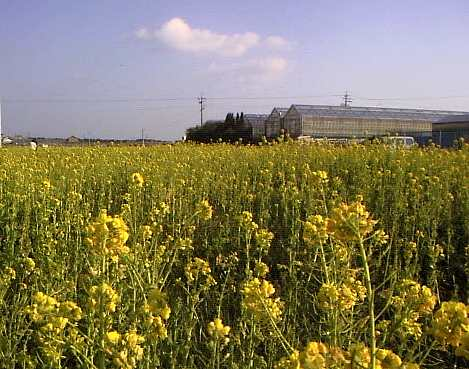

釣行日誌 故郷編
2004/01/01 叔父とアイナメ、そして菜の花
海沿いの国道を、叔父を助手席に乗せて走る。
無口になった叔父は、風の強い防波堤の上で、何人かの釣り人が延べ竿を操っていても、あまり興味がわかないようだ。
「おじさん、この辺だと何が釣れるの？」
「まぁ、アイナメだな。･･････････」
「･･････････」
「･･････････」
「餌は？」
「イソメ。･･････････」
「･･････････」
「･･････････」
こちらから質問をすれば、それに対する答えは単発的に返ってくるが、そこから発展的に会話が進行するということは無い。小さいながらも釣り船を持ち、私が小さい頃にはよくサバやアジを釣りに連れていってくれた叔父も、今はもう釣りができなくなり、週に４回、町のデイサービスに通う日々が続いている。それ以外には、毎日朝と午後に長時間の散歩をするだけになってしまった。
「おじさん、アイナメはいつがいいの？」
「春。だな。･･････････」
秋に叔父の家を訪れたときに、叔父が、また故郷の実家に帰ってみたいと言っていたので、昨日の大晦日、約100km離れた海辺の町まで叔父を連れに行って来た。しかし、今朝まだ暗いうちから起き出して散歩に出かけた叔父は、道路脇の深い側溝に落ちて脚を怪我してしまった。幸い骨には異常が無いようだったが、気が動転したのか、自分の家に帰りたいと言い出して聞かないので、とんぼ返りでまた海辺の町まで送っていくことになったのだ。
叔父の家が近づくにつれて、風は厳しいものの、日差しが力強くなり、山奥の私の町では望むべくもない菜の花が畑で咲いている。
「やっぱりこっちは暖かいねぇ！ おじさん」
「ああ、暖かい･･････････」
ちょうどお昼時に叔父の家に着いた。心配するかも知れないと思い、あえて連絡はしなかったので、叔母も、従弟夫婦もびっくりしてしまった。従弟が、叔父のズボンをめくり、怪我した右脚を調べてみる。朝よりも腫れているようだが、やはり骨は大丈夫のようだ。しかし、大事をとって、病院が開いたらレントゲンを撮ってもらうことにした。
当初の予定では、もう一泊するつもりだったのだが、急に帰ってきてしまったので、叔父さんの分のお昼の支度はしてないだろうと思い、途中のコンビニで買ってきたお弁当を叔父さんと二人でいただく。叔母さんの食事はお嫁さんが作ってくれた。
叔父が元気だった頃は、釣りから帰ると、叔母さんが見事な包丁さばきでアジのたたきをこしらえてくれたものだった。カニの味噌汁も美味しかった。その叔母さんも近年めっきり弱くなり、病院に通う日々が続いている。
久しぶりに在所へ帰って嬉しかったのか、昨夜はあまり眠れなかったと言う叔父は、昼過ぎだというのに布団を敷いて寝ると言い出した。ズボンを脱がせてくれと頼むので、叔母が手伝うと、そんなにひどくしたら痛いじゃないかと怒り、そしてベソをかいてしまう。小さな男の子に戻ってしまったようだ。
叔父が寝入ったので、私は離れの部屋に叔父さんと叔母さんを残し、従弟夫婦の部屋に行った。思うように歩けるようになったので、面白くてたまらない一歳半の長女が、悪戯の限りを尽くして部屋中をのし歩いている。春には二人目が生まれるという奥さんが、お茶を入れてくれた。
「正月早々とんだことになって悪かったなあ」
「いやいや。親父も暗いうちから散歩に行くなんて無理だわ」
従弟夫婦も、目の離せない父と病弱の母、小さい赤ん坊を世話しながら店を切り盛りしてきたのだから、さすがに疲れの色が見える。それを思えば、私の父は、とみに忘却力が増してきたとは言え、まだまだしっかりしていて健康なのだから、ありがたいことである。
「二人とも、大変だろうけど、よろしく叔父さん叔母さんを頼みます。また、叔父さんを連れに来るから。」
従弟夫婦と、離れの叔母さんに挨拶をして、元日の午後、海辺の町を後にする。日差しの中を、黄色い絨毯が、柔らかな光を反射しながら飛び去ってゆく。
父も老いた。叔父も叔母も老いた。無論私も。あと何十年か経てば、あるいはあっという間に、私も父や叔父のようになるだろう。確実に。菜の花畑が後ろに飛び去るように日々は過ぎて行くに違いない。
昨日、叔父を連れて家に帰る途中、見事に広がった菜の花畑を見つけていたので、今日はそこで写真を撮すことにした。路肩に止めた車から降りると、すでに一組の家族連れが、いろんなポーズで写真を撮り合っている。私のデジカメには、セルフタイマーが無いので、またしても風景写真だけになるなと思っていると、荷物を満載した赤いバイクが止まった。ヘルメットを脱いだその女性ライダーは、大きく膨らんだザックからデジカメを取り出し、同じように菜の花畑を撮り始めた。

「あ！ 写しましょうか？」
こちらも御願いしたいので、ずーずーしくも押し売り的に申し出て、快晴の空と赤いバイクを構図に入れ、黄色い光に包まれた妙齢の女性ライダーを写す。聞けば、横浜からソロ・ツーリングに来て、昨夜は二見浦で夜を明かし、初日の出を拝んでからフェリーで伊良湖へ渡ったとのこと。
「すいません、ちょっと写してもらえますか？」
あつかましくも予定通りに御願いし、早春の菜の花畑にはまことに似つかわしくない人物のスナップを写してもらう。
「ありがとうございました。この先は、観光でよそから来たドライバーが多くて、みんなスピード出すので気を付けていって下さい。あと、ネズミ捕りにもね」
帰りが遅くなると、山奥の道路は凍結するかもしれないので、家路を急ぐ。半島の先で初日の出を見たのか、県外ナンバーの車が次々と私の車を追い越してゆく。
『春になったら、父と叔父を連れて、風当たりの弱いあの防波堤の裏に行ってアイナメを釣ろう......』
東へ向かう幹線国道が、遙かにそびえる故郷の山々の方へと、もうすぐ分かれるあたりで、横浜ナンバーの赤いバイクが風を巻いて追い越して行った。短いクラクションが、私の新年に、一叢の菜の花を投げ込んでくれた。
釣行日誌 故郷編 目次へ
サイトマップ
ホームへ
お問い合わせ